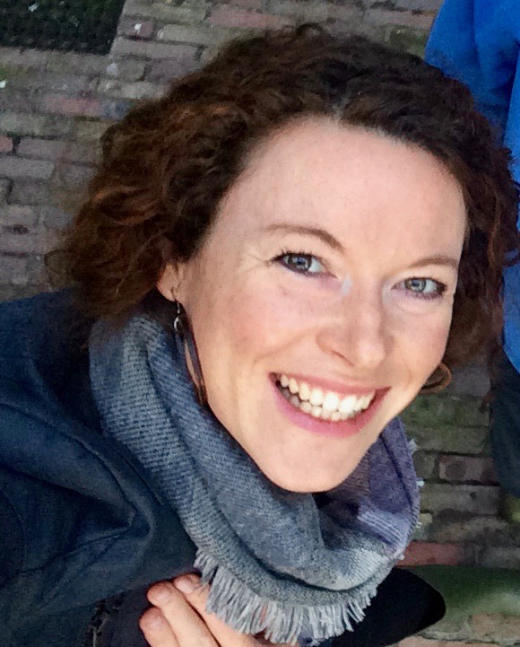
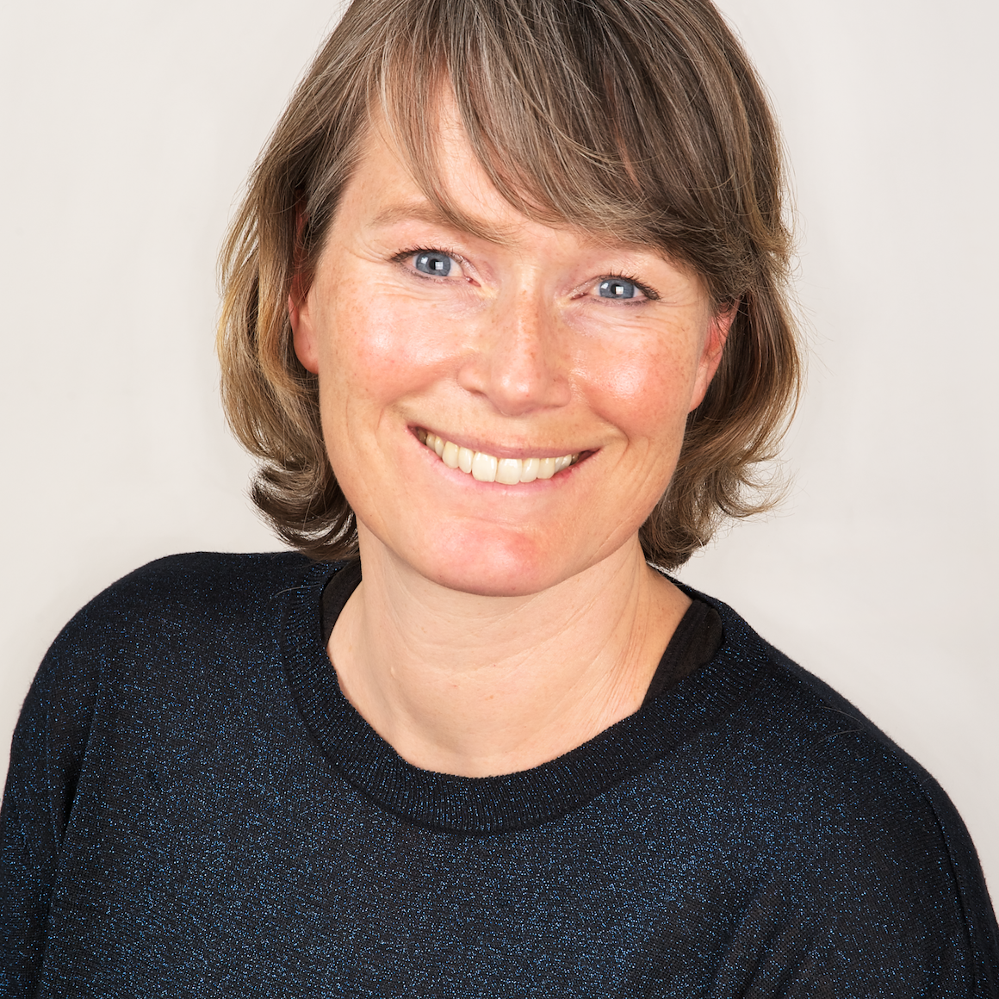

YELLOW EN ISABEL
Yoga heeft me geleerd weer echt te voelen, met mildheid naar mezelf te kunnen kijken en lichtheid te ervaren. En ik weet nu dat alles al in mij en dus ook in jou aanwezig is, je hoeft er alleen de weg naar terug te vinden. Telkens opnieuw. Yoga heeft me weer bij mezelf gebracht, bij wat ík nodig heb. Het belangrijkste dat ik heb teruggevonden is een rotsvast vertrouwen in mezelf. Het leven is meer ‘mogen’ geworden in plaats van altijd ‘moeten’! Dat heeft mij zo enorm geholpen dat ik yoga heel graag wil delen.

Yoga gaat in mijn ogen niet over het perfect kunnen uitvoeren van de
houdingen. Yoga gaatover jou. Het verkennen van jóuw grenzen en
mogelijkheden en deze opnieuw (leren) voelen. De oefeningen en ademhaling
helpen je dit lichamelijk te ervaren en conditie op te bouwen, de
meditatie en ontspanning helpen je hier geestelijk op weg. Naast yoga word
ik blij van kleine dingen zoals een lekkere kop thee in de ochtend en
frisse winterlucht inademen. Ik hou van wielrennen, een mooie film in het
filmhuis, een warm bad, een goed gesprek met vriend(inn)en, lachen en
dansen. Verder ben ik naast Ysabel en Yellow adviseur/projectleider op het
gebied van leren & ontwikkelen en organisatieontwikkeling. Ook deel ik
graag échte complimenten uit op (zakelijke) bijeenkomsten en feestjes als
één van de meisjes van het compliment".
YELLOW EN BABS

Yoga helpt je stil te staan... te voelen... ademen... jezelf lief te
hebben. Yoga ís liefde. Liefde voorjezelf en de wereld om je heen. En ik
deel mijn liefde door en voor yoga graag met jullie. Op jouw eigen manier
mag je jezelf geven wat je nodig hebt. Met je lichaam als kanaal, je
ademhaling als anker en instrument en de liefde als leidraad. Zelf ben ik
ben door yoga veranderd: nog steeds enthousiast en energiek, maar ook
milder, zachter, en meer in balans, meestal :-). En dat voelt als
thuiskomen. En zeg nou zelf ‘thuiskomen bij jezelf’, dat klinkt toch
heerlijk! Naast yoga doen en yoga geven word ik blij van (voor)lezen,
tekenen, wandelen, fietsen, psychologie en gedragswetenschap, mijn
jongens, kamperen, mensen, lachen en steeds weer nieuwe dingen doen. Naast
yogadocent ben ik adviseur/projectleider bij de rijksoverheid in het
domein gedragsinzichten".